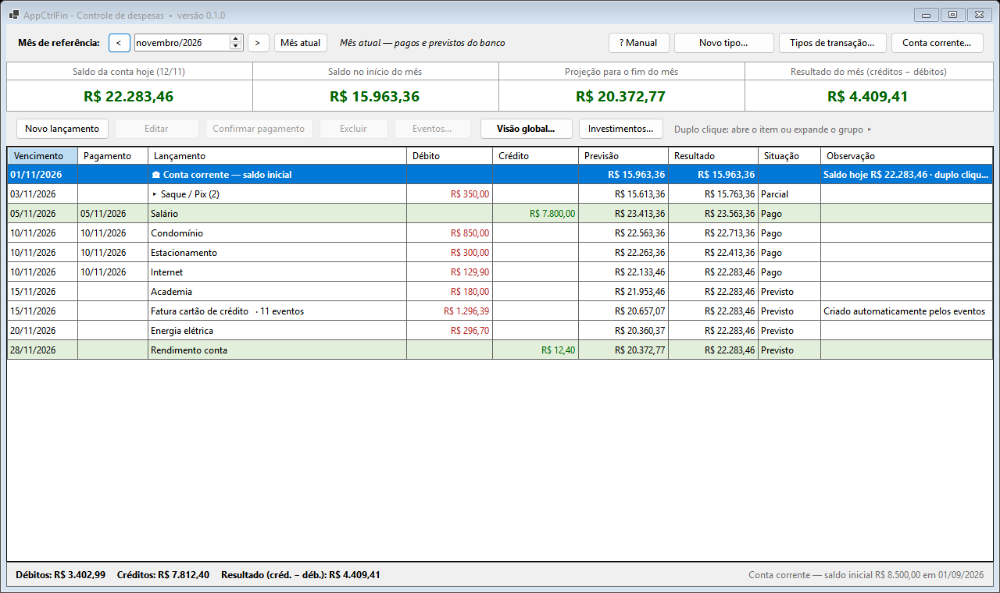
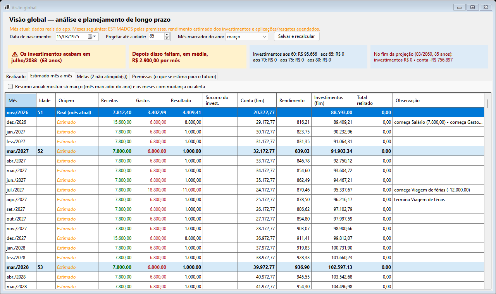
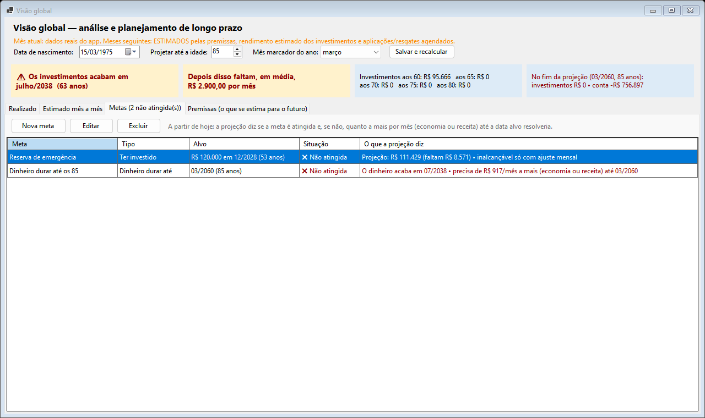

O que ele faz

Mês a mês
Previsto e realizado, saldo de hoje e projeção do fim do mês.

Cartões de crédito
Compras pelo dia de corte; a fatura se monta sozinha.

Conta corrente
Extrato do mês e aviso quando a conta vai ficar negativa.

Investimentos
Aplicações, resgates, rendimentos, projeção e socorro da conta.

Visão global
Planejamento de longo prazo até a idade que você escolher.

Metas
O app diz se a meta é atingida e quanto a mais por mês seria preciso.
Todas as telas usam dados fictícios.